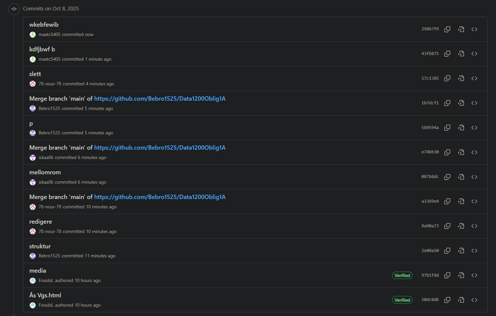

Skoler
Mailand Vidregående
Mailand vidregående ligger i Lørenskog. Skolen tilbyr utdanning innen flere fagområder. Dette inkluderer studiespesialisering, yrkesfag og voksenopplæring.
Nettsiden til Mailand VGSElvebakken vgs
Elvebakken er en videregående skole med 1400 elever smo ligger på Grünerløkka i Oslo. Den tilbyr linjene studiespesialisering, kunst design og arkitektur, medier og kommunikasjon, IT og medieproduksjon og elektro. Det nærmeste tbanestoppet er jernbanetorget, men det går også en buss som stopper rett utenfor skolen. Elvebakken ligger rett ved siden av Akerselva og kulturkirka Jakob.
Nettsiden til Elvebakken vgsKuben Vgs
Kuben er Norges største videregående skole, med rundt 1800 elever. Skolen tilbyr linjer som studiespesialisering med fordypning i realfag eller SSØ, bygg- og anleggsteknikk, elektro og datateknologi, teknologi- og industrifag, helse- og oppvekstfag, informasjonsteknologi og medieproduksjon, og til slutt yrkes- og studiekompetanse.
Nettsiden til Kuben vgsValle Hovin VGS
Valle Hovin er en videregående skole som tilbyr vanlig studiespesialisering og studiespesialisering med toppidrett. For å komme seg dit må man gå av på Helsfyr og gå i 10 minutter.
Nettsiden til Valle Hovin VGSÅs Vgs
Ås videregående skole er en skole som ligger omtrent 20 minutter unna oslo med tog. Skolen tilbyr en stor variasjon av linjer som man kan gå. noen eksempler på linjer er studiespesialering, toppidrett, fbie, kunst design og arkitektur og elektro.
Nettsiden til Ås vgsBebro1525
maat5405

78-nour-78

iskaa06